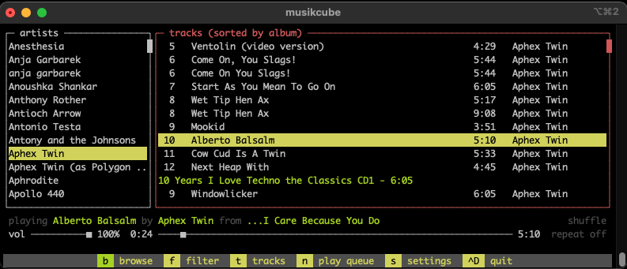

fully functional cross-platform, terminal-based audio engine, library, player and server written in c++.
I always had the secret idea of using linux terminal and only terminal for everything, I believe this comes from the moment I discovered terminal based browser, it was w3m that I used ocasionally but lack of other terminal based tools kinda left w3m unused and unexplored. Up until now I was looking for a good terminal based music player, got to know already mp3blaster and cmus but that was not it.
the project github page gives the details and information on features.
installation is straith fwd, available for mac, win and linux.
releases and binaries are available on github releases page. I faced an installation failing due to missing dependencies. On Fedora install below dependencies to fully support the installation, both via rpm or from source.
# sudo dnf install gcc-c++ make cmake libogg-devel libvorbis-devel ffmpeg-devel ncurses-devel zlib-devel alsa-lib-devel pulseaudio-libs-devel libcurl-devel libmicrohttpd-devel lame-devel libev-devel taglib-devel openssl-devel libopenmpt-develthe killer functionality/idea for me is the possibility to play music on a remote computer just by connecting to it via remote ssh connection and starting musikcube in terminal and browse the remote computer music library and once you play it will play on a soundcard and speakers of a remote computer.